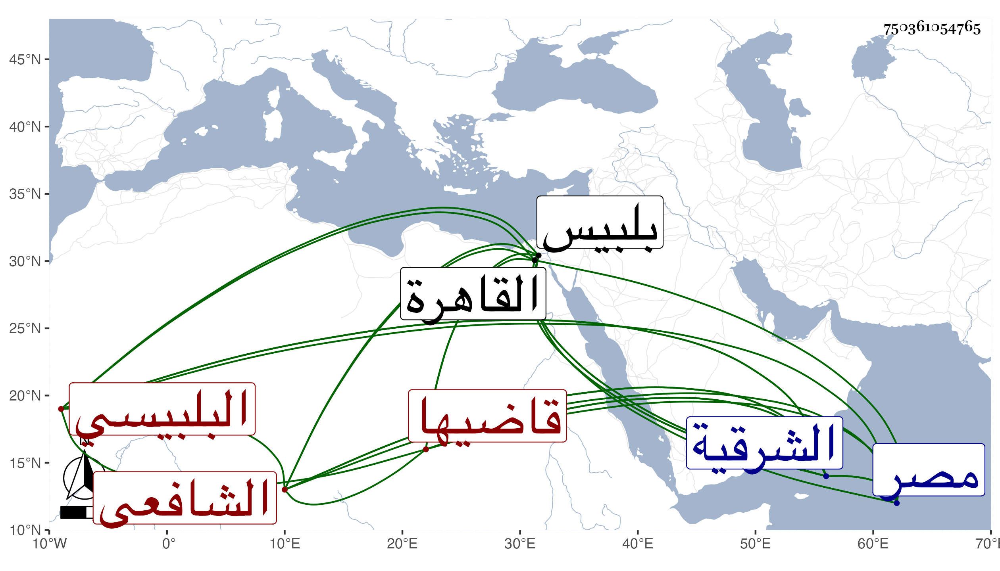

0902Sakhawi.DawLamic.ITO20230111-ara1.EIS1600.750361054765
Biography ID: 750361054765
82
محمد بن محمد بن أحمد بن عمر الشمس أبو عبد الله بن الشمس أبي عبد الله ابن المحيوي أبي العباس البلبيسي قاضيها الشافعي ويعرف بابن البيشي بموحدة مكسورة بعدها تحتانية ثم معجمة . ولد بعد سنة سبعين وسبعمائة ببلبيس ونشأ بها فحفظ القرآن وكان المجد إسماعيل البلبيسي قاضي الحنفية بمصر قريبه من جهة النساء فانتقل عنده بالقاهرة سنة اثنتين وتسعين فجود بعضه على الفخر الضرير الإمام بالأزهر وكذا حفظ العمدة والمنهاج وألفية النحو ، وعرض في سنة أربع وثمانين فما بعدها على قريبه المجد والأبناسي والتاج أحمد بن محمد بن عبد الرحمن البلبيسي الشافعي الخطيب والزين العراقي والسراج بن الملقن والصدر المناوي والتقي بن حاتم والتاج محمد بن أحمد بن النعمان وناصر الدين بن الميلق والبدر بن السراج البلقيني وأجازوه وعين البدر ماله من تصنيف وتأليف ونظم ونثر في آخرين أوردت منهم في المعجم جملة ، وبحث جميع المنهاج في التقسيم الذي كان أحد القراء فيه على الأبناسي وغالبه على البيجوري وبعضه على ابن الملقن وكذا حضر دروس البلقيني وأخذ عن الزين العراقي ورأيته أثبته في بعض مجالس أماليه في أول سنة ثلاث وتسعين وكان بحضرة الهيثمي ثم عن ولده الولي أبي زرعة ، وحج مع أبيه صغيرا ولازم مطالعة الروضة فكان يستحضر أكثرها مع استحضار الحاوي وكتب بخطه الحسن أشياء ، وناب في القضاء ببلده عن التقى الزبيري قبل القرن واستمر ينوب لمن بعده بل اقتصر القاياتي أيام قضائه عليه في الشرقية جميعها إجلالاله ودرس المنهاج والحاوي وغيرهما وأفتى وصار المعول عليه . وكان اماما عالما فقيها غاية في التواضع وطرح التكلف أجازلي . ومات بعد بيسير في ذي القعدة سنة ثلاث وخمسين ولم يخلف في الشرقية مثله رحمه الله وإيانا .
